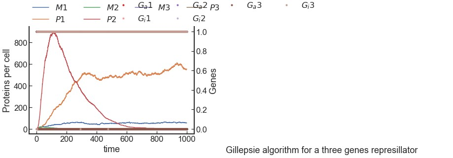

The goal of this simulation is to model a stochastic repressilator gene network using the Gillespie SSA (Stochastic Simulation Algorithm). Unlike deterministic differential equation models, this implementation captures molecular noise and random fluctuations in gene expression at the single-cell scale. The objective is to observe how oscillatory behavior in mRNA (Mi) and protein (Pi) levels can emerge purely from stochastic reaction dynamics within a three-gene inhibitory loop.
The biological system is encoded as a reaction transition matrix, where each row corresponds to a chemical reaction and each column represents a molecular species (active/inactive gene states, mRNA, proteins). At each simulation step, reaction propensities are computed based on kinetic parameters such as transcription, translation, repression, and degradation rates. The Gillespie algorithm is then used to randomly select the next reaction and its stochastic time increment using exponential sampling. The system state evolves step-by-step, and trajectories for gene state switching (Ga/Gi), mRNA synthesis (Mi), and protein production (Pi) are visualized using matplotlib.
The execution produces clear stochastic oscillations in the expression levels of M1, M2, M3 and P1, P2, P3. These oscillations emerge without any deterministic enforcement, driven solely by intrinsic biochemical noise. The plots reveal alternating repression and activation cycles across the three genes, confirming that stochasticity alone can generate oscillatory gene expression patterns in a minimalist feedback network. This behavior closely aligns with biological observations where noise is not a disturbance, but a fundamental driver of dynamic regulation in living systems.
